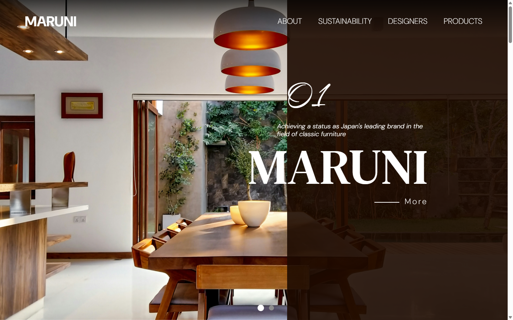
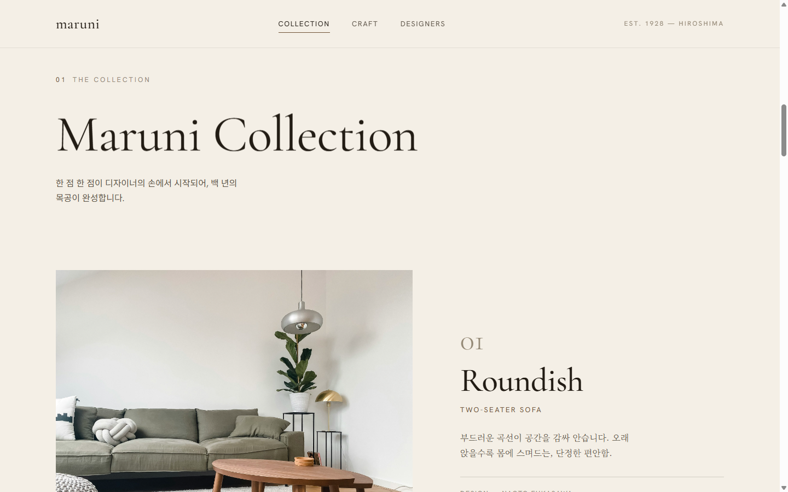
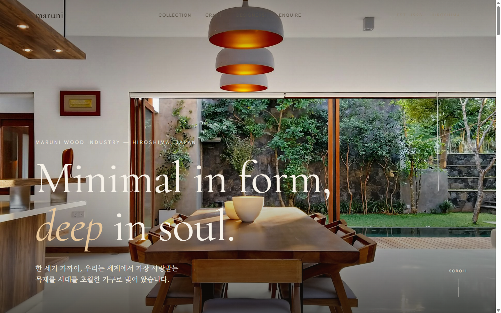
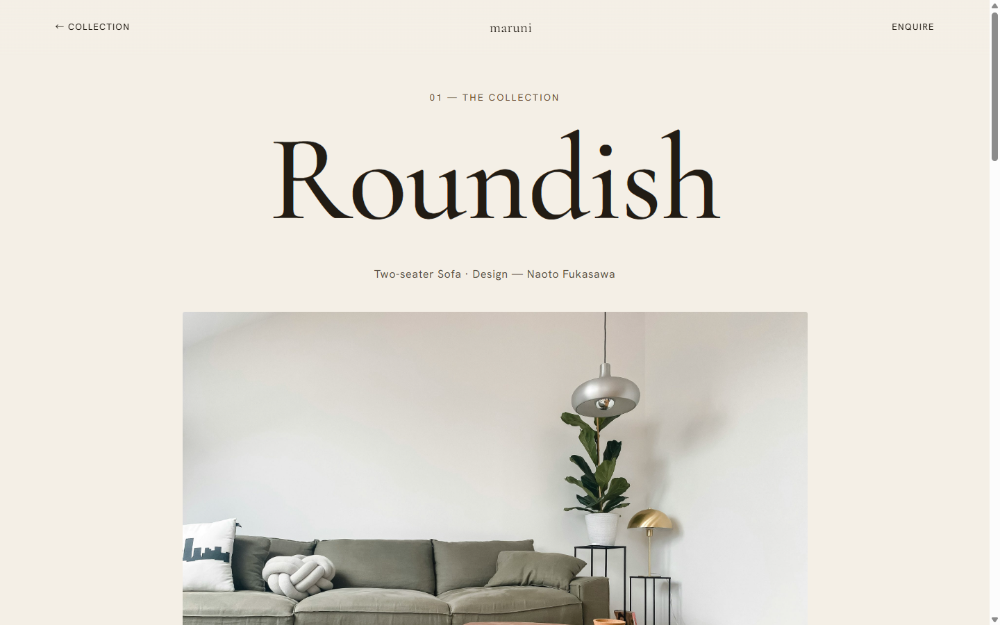
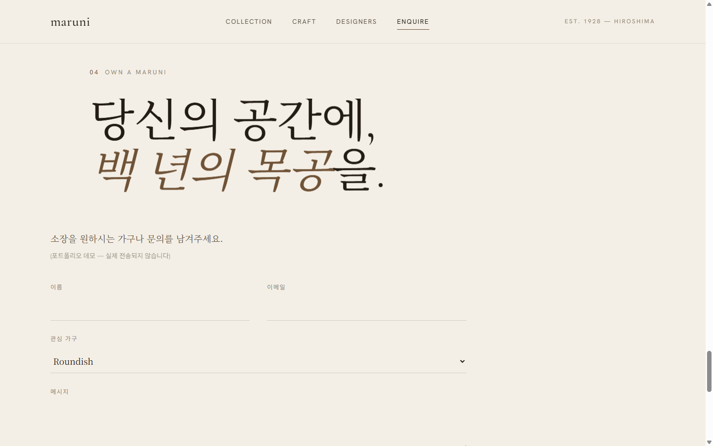

가구 상세 딥다이브
컬렉션이 Flip 라이트박스(확대)로만 끝나던 막다른 골목. → 대표 1종 Roundish 상세를 신설하고, 가구 이미지 → 상세 히어로를 View Transitions로 모핑. 이미지 클릭은 기존 Flip 유지.
UX Case Study — Human × AI
기존 Maruni 리디자인을 Claude Code와 협업해 여정·인터랙션·코드 품질까지 한 단계 더 끌어올린 과정. AI가 대신 만든 것이 아니라, 사람이 주도하고 AI와 함께 발전시킨 기록.

원본은 컬러 활용이 부족하고 패턴이 단조로웠으며, 제품 외에 브랜드 스토리를 전하는 콘텐츠가 부족했습니다. 디자이너 정보에는 사실 오류(두 사람을 한 이름으로)도 있었습니다.

1차 리디자인은 뮤지엄 에디토리얼 톤과 GSAP Flip 라이트박스로 quiet luxury를 크게 끌어올렸습니다 — 철학·컬렉션·만듦새·디자이너의 한 흐름.
그러나 여정은 막다른 골목이었습니다. 가구를 '더 깊이' 볼 수 없었고, 종착지가 없었으며, 뉴스레터는 이메일 형식을 검증하지 않았습니다.
→ 여기서부터가 AI 협업으로 발전시킬 지점이었습니다.
각 개선은 문제 발견 → AI 제안 → 검토·선택 → 실측 검증의 루프로. AI는 대안을 제시했고, 방향의 선택과 판단은 사람이 했습니다.
컬렉션이 Flip 라이트박스(확대)로만 끝나던 막다른 골목. → 대표 1종 Roundish 상세를 신설하고, 가구 이미지 → 상세 히어로를 View Transitions로 모핑. 이미지 클릭은 기존 Flip 유지.
순환으로 끝나던 여정을 '소장 문의'로 닫음. 클라이언트 검증 + 성공 상태. nav·드로어·상세 CTA에서 연결. "데모 — 실제 전송되지 않음" 정직하게 명시.
quiet luxury에 맞춰 과하지 않게 — 컬렉션 가구에 hover 시 나뭇결이 천천히 다가오는 정적 줌.
GSAP가 남긴 인라인 transform과 충돌하지 않도록 독립 CSS scale로 구현.
기존 핸들러가 제출 시 입력을 비워 새 핸들러와 충돌하던 문제를 발견. 중복을 정리하고 기존 핸들러를 이메일 형식 검증 + aria-live 피드백으로 업그레이드.
같은 공간을 어떻게 다르게 담았는가 — 무거운 오버레이·범용 타이포에서 밝은 톤·에디토리얼 타이포로. quiet luxury는 요란한 변화가 아니라 격의 차이입니다. 핸들을 드래그해 비교해 보세요.



“AI가 대신 만든 것이 아니라, 내가 주도하고 AI와 협업해 더 높은 완성도로 발전시켰다.”
문제 정의와 방향의 판단은 사람이, 대안의 폭과 구현의 속도는 AI가. 그 협업의 의사결정을 결정 로그(M-D1–M-D5)로 남겨, 결과물뿐 아니라 '어떻게 발전했는가'까지 보이도록 했습니다.